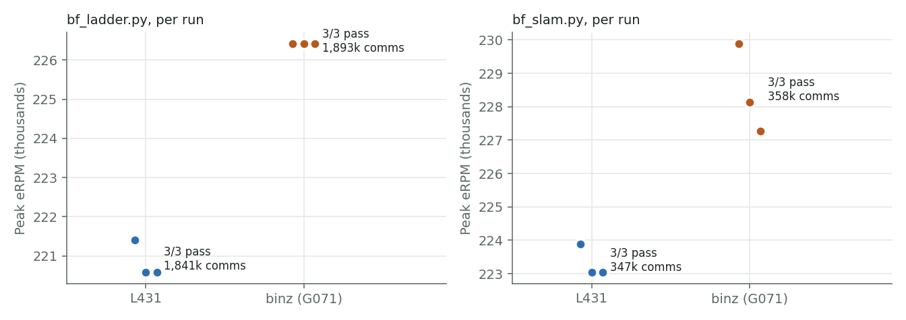
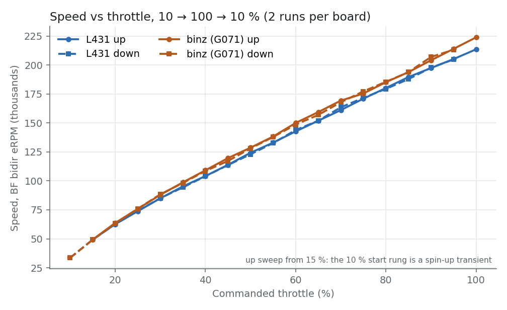
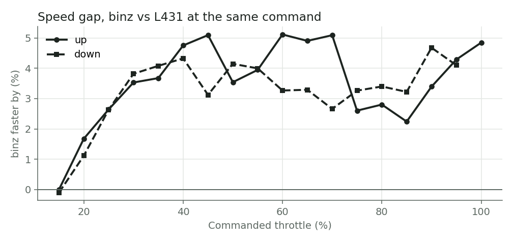
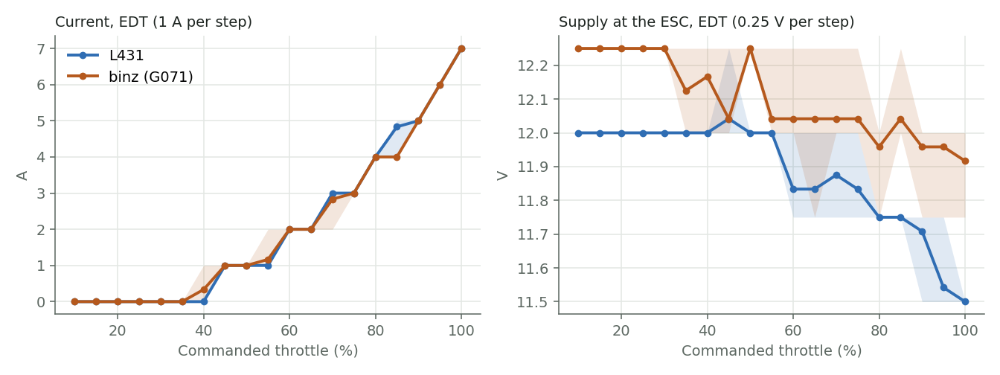
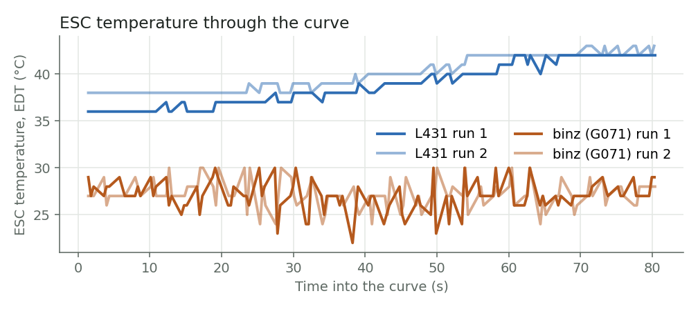
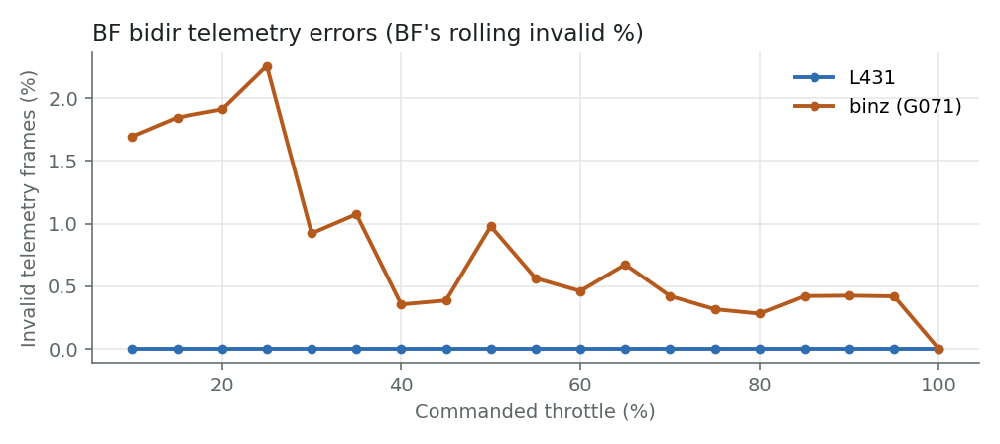
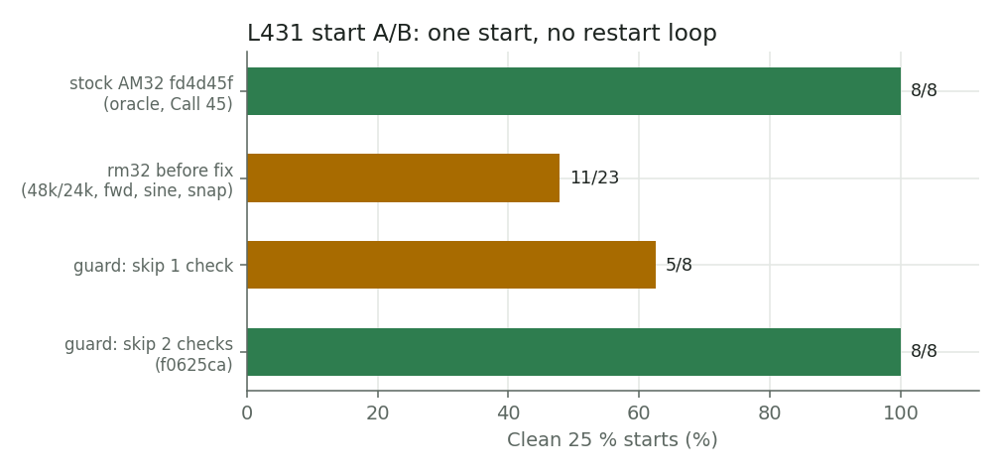

L431 and G071, side by side on one commit
Both ESCs ran the same rm32 source (devel d30c3d3; firmware tree identical to f0625ca) on the same motor, switched between boards by the relay. Betaflight drove both over DSHOT300 (unidirectional) from one F411. Supply was the 3S2P pack in parallel with the PSU. Every test ran as a separate command, alternating boards.
Every ladder and double-slam on both boards held one start with zero desyncs. No resets happened during any test, and the bench guard never fired. A pass needs starts=1, dsy=0, and more than 500k locked commutations on a ladder or more than 100k on a slam. Verdicts come from the [run] summary the ESC prints after each stop.
Board averages (3 runs each)
Vimdrones L431
- Ladder comms
- 1,841,016
- Ladder peak eRPM
- 220,859
- Slam comms
- 346,917
- Slam peak eRPM
- 223,325
- Shortest e-period
- 268–272 µs
- Desyncs / restarts
- 0 / 0
binz (NUCLEO-G071RB + DRV8304H)
- Ladder comms
- 1,893,486
- Ladder peak eRPM
- 226,415
- Slam comms
- 357,671
- Slam peak eRPM
- 228,431
- Shortest e-period
- 261–265 µs
- Desyncs / restarts
- 0 / 0
Where they differ

binz reaches about 2.5% higher top speed. Locked commutations scale with speed over a fixed-time ladder, so its counts are higher by the same margin. Run-to-run spread within a board is under 0.5%, so the gap is real. The likely causes are power-stage differences: the gate drivers and FETs differ between the two boards, the dead time is set per board (L431 about 560 ns, binz about 405 ns), and the battery leads are routed differently through the relay. Nobody has measured which one it is. Neither board shows a stability difference.
Throttle curves
scripts/bf_curve.py steps each board 10 → 100 → 10% in 5% steps, two runs per board, alternating. At every step it reads Betaflight's own bidirectional eRPM and EDT telemetry (temperature, voltage, current), three samples per step. The x-axis is the throttle Betaflight commands. The ESC's internal duty isn't visible from the FC, and the ESC never prints while the motor is powered. All four curve runs passed by the same rule as the ladder: one start, zero desyncs, no resets (1.03M L431 and 1.06M binz locked commutations per run).

Speed tracks throttle almost linearly on both boards, from 49k eRPM at 15% to 214k (L431) and 224k (binz) at 100%. The up and down sweeps lie on top of each other, so there is no hysteresis and no lost lock coming down.

The gap opens with throttle: none at 15%, 2.5% at 25%, then 2.2–5.1% from 30% to the top. Up and down sweeps agree to within about 1.5 points.

Current is the same on both boards at 1 A resolution, reaching 7 A at 100%. The supply readings differ by 0.22 V even near idle (12.00 V vs 12.22 V) on the same pack and PSU. That points to a calibration offset between the boards' voltage dividers, so these readings can't explain the speed gap. The L431 reads 0.5 V of sag at 7 A and binz 0.3 V. That is only one or two 0.25 V EDT steps, too coarse to compare the power paths.

The L431 warms steadily, from 36 to 43 C over 80 s. binz reads 22–30 C with ±3 C jitter from sample to sample and no trend. It looks like a noisy temperature measurement on the G071 side, worth a look before EDT temperature is trusted on that chip.

Betaflight's telemetry error rate is 0% on the L431 at every step. On binz it is 0.3–2.3%, worst below 30% throttle. This is the known binz telemetry item, now measured across the whole range.
Every run
| Board | Test | # | Starts | Dsy | Comms | Peak eRPM | Min e-period µs | Session ms | Verdict |
|---|---|---|---|---|---|---|---|---|---|
| L431 | ladder | 1 | 1 | 0 | 1,843,118 | 221,402 | 271 | 139,325 | PASS |
| binz | ladder | 1 | 1 | 0 | 1,893,873 | 226,415 | 265 | 140,125 | PASS |
| L431 | ladder | 2 | 1 | 0 | 1,838,634 | 220,588 | 272 | 139,356 | PASS |
| binz | ladder | 2 | 1 | 0 | 1,895,052 | 226,415 | 265 | 140,201 | PASS |
| L431 | ladder | 3 | 1 | 0 | 1,841,295 | 220,588 | 272 | 139,257 | PASS |
| binz | ladder | 3 | 1 | 0 | 1,891,532 | 226,415 | 265 | 139,740 | PASS |
| L431 | slam | 1 | 1 | 0 | 347,639 | 223,880 | 268 | 29,608 | PASS |
| binz | slam | 1 | 1 | 0 | 359,506 | 229,885 | 261 | 29,331 | PASS |
| L431 | slam | 2 | 1 | 0 | 346,333 | 223,048 | 269 | 29,602 | PASS |
| binz | slam | 2 | 1 | 0 | 355,948 | 228,136 | 263 | 29,149 | PASS |
| L431 | slam | 3 | 1 | 0 | 346,779 | 223,048 | 269 | 29,573 | PASS |
| binz | slam | 3 | 1 | 0 | 357,559 | 227,272 | 264 | 29,211 | PASS |
Ladder: 10 → 100 → 10% in 2% steps, 1.5 s per step, never back to zero. Slam: 5 s at 10%, then three cycles of 100% → 10% → 100% → 10%. Logs are in captures/gc/issue7/, and scripts/issue7_table.py regenerates this table from them.
What it took to get here
The first L431 runs on this bench choked on about half of all 25% starts. The rotor got stuck in a restart loop with about 500 starts and 750 desyncs per hold. binz never did this. Stock AM32 (fd4d45f) on the same L431, motor, FC and config started cleanly 8 times out of 8, so the cause had to be in rm32.
- Ruled out: carrier frequency (24 kHz also choked), spin direction, sine start, and the generic-core refactor (the pre-refactor baseline choked too). The duty matched AM32 at every check.
- Mechanism: a snapshot of the desync detector's inputs, now printed in
[run]asfirst=andhist=, showed the first desync always fired at zero-cross 24, the first check in interrupt mode. rm32 polls BEMF on its 20 kHz tick rather than at AM32's main-loop rate, so commutations in polling mode run late. At the switch to interrupt mode the timing snaps to correct, the next revolution is about 35% faster, and|last − avg| > avg/2reads that jump as a desync. - Start record, counted from the logs: rm32 before the fix 11/23 clean, across every variant tried. One-check guard 5/8. Two-check guard 8/8. Stock AM32 8/8.

- Fix (f0625ca): the detector only compares two revolutions that both ran fully in interrupt mode. A guard that skipped only one check fixed 5 of 8 starts, because the zc 18–24 window was still mixed. Skipping two checks gave 8 of 8 clean starts at 75.5–76.1k eRPM. This is a recorded divergence from AM32, and it exists only because rm32's polling rate differs from AM32's.
- Protocol matrix re-run on f0625ca: DSHOT600, DSHOT150, DSHOT300, PWM and bidirectional DSHOT300 all pass. Each leg made one start, reached closed loop with zero desyncs, and peaked at about 75k eRPM. On the bidirectional leg Betaflight read 73.7k eRPM with 0% invalid telemetry.
gc-s7-dshotis merged into devel.
Open items
- binz boot decode stall (outside the tests): in 2 of 6 sessions binz came up after the FC reboot with 0% DSHOT decode. It logged about 500 CRC failures, with a stale 16-bit first capture interval (≈62,350) in front of clean pulse widths. After one signal-timeout reset it decoded normally. This looks like the one-edge capture misalignment class. It happened before the test window in both cases, so no verdict is affected, but it is a defect to chase.
- EDT restored at
dshot_edt = ON(Call 44, rewritten): the cause was an FC setting, not Betaflight code.feature ESC_SENSOR, left on since the August KISS test, stops Betaflight from sending the EDT-enable command at arm and replaces the MSP temperature, voltage and current with the unwired serial sensor. On the stock Betaflight build, switching it on, off and on again gave eRPM only, then full temperature, voltage and current, then eRPM only (L431 37 C, 12.00 V; binz 27 C, 12.25 V). The FC is now onONwithESC_SENSORoff. - L431 SWD needs a slow clock (
--speed 100) since the power cycle. Flashing works at that speed and the runs are unaffected.